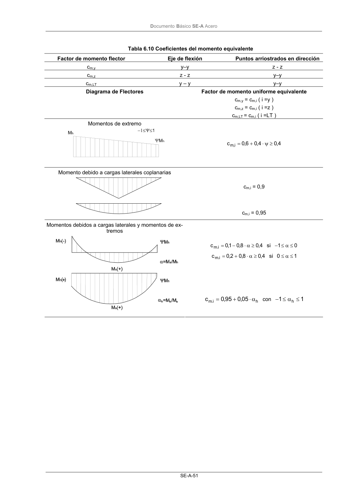

DB-SE-A · Página 53 · versión 2007-10-23
SHA256: 9ed9ea694aabfbda3bfbbef40dfe9223fde05d13c35bc2ba9751e5a96a22a64f · página física 53 de 168 · métodos de encabezado
solo si están cotejados.
Formatos: Markdown · JSON de bloques · PDF p. 53 · imagen PNG
Documento Básico SE-A Acero SE-A-51 Tabla 6.10 Coeficientes del momento equivalente Factor de momento flector Eje de flexión Puntos arriostrados en dirección cm,y y–y z - z cm,z z - z y–y cm,LT y – y y–y Diagrama de Flectores Factor de momento uniforme equivalente cm,y = cm,i ( i =y ) cm,z = cm,i ( i =z ) cm,LT = cm,i ( i =LT ) Momentos de extremo 4 ,0 4 ,0 6,0 c i, m ≥ ψ ⋅ + = cm,i = 0,9 Momento debido a cargas laterales coplanarias cm,i = 0,95 4 ,0 8,0 1,0 c i. m ≥ α ⋅ − = si 0 1 ≤ α ≤ − 4 ,0 8,0 2,0 c i. m ≥ α ⋅ + = si 1 0 ≤ α ≤ Momentos debidos a cargas laterales y momentos de ex- tremos h i. m 05 ,0 95 ,0 c α ⋅ + = con 1 1 h ≤ α ≤ −
